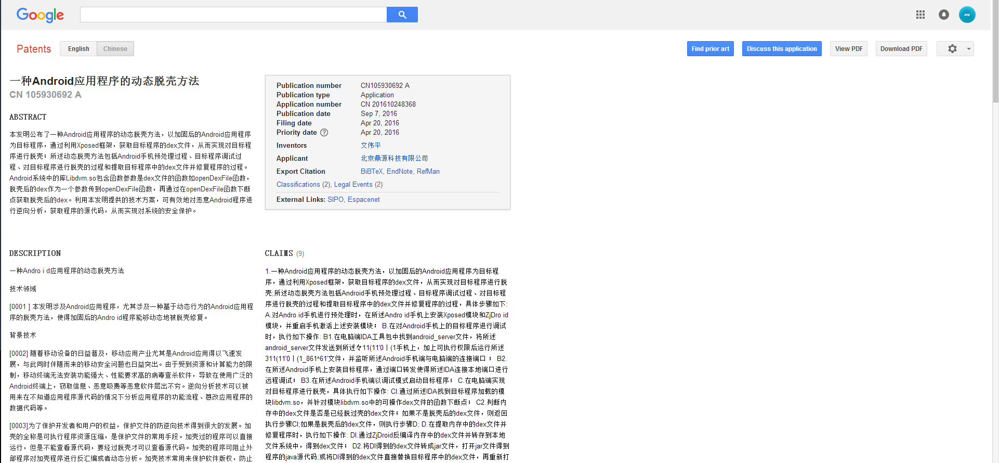
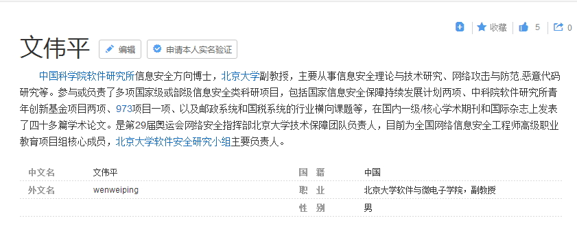

Author：wnagzihxa1n
Mail：tudouboom@163.com
无意间看到百度上面登记的一个专利
Google上面有详细描述

专利这种东西，两句话可以说清楚非要拆成一百句，我还给改正了里面一大堆的错别字（为了过检索？？？）
开头简单介绍，看起来像是在dvmDexFileOpenPartial()这个函数下断点脱壳
本发明公布了一种Android应用程序的动态脱壳方法，以加固后的Android应用程序为目标程序，通过利用Xposed框架，获取目标程序的dex文件，从而实现对目标程序进行脱壳；所述动态脱壳方法包括Android手机预处理过程、目标程序调试过程、对目标程序进行脱壳的过程和提取目标程序中的dex文件并修复程序的过程。Android系统中的库
libdvm.so包含函数参数是dex文件的函数如openDexFile函数，脱壳后的dex作为一个参数传到openDexFile函数，再通过在openDexFile函数下断点获取脱壳后的dex。利用本发明提供的技术方案，可有效地对恶意Android程序进行逆向分析，获取程序的源代码，从而实现对系统的安全保护
废话
本发明涉及Android应用程序，尤其涉及一种基于动态行为的Android应用程序的脱壳方法，使得加固后的Android程序能够动态地被脱壳修复
介绍现状，典型的论文派
随着移动设备的日益普及，移动应用产业尤其是Android应用得以飞速发展，与此同时伴随而来的移动安全问题也日益突出。由于受到资源和计算能力的限制，移动终端无法安装功能强大、性能要求高的病毒查杀软件，导致在使用广泛的Android终端上，窃取信息、恶意吸费等恶意软件层出不穷。逆向分析技术可以被用来在不知道应用程序源代码的情况下分析应用程序的功能流程、篡改应用程序的数据代码等。
为了保护开发者和用户的权益，保护文件的防逆向技术得到很大的发展。加壳的全称是可执行程序资源压缩，是保护文件的常用手段。加壳过的程序可以直接运行，但是不能查看源代码，要经过脱壳才可以查看源代码。加壳的程序可阻止外部程序对加壳程序进行反汇编或者动态分析。加壳技术常用来保护软件版权，防止软件被破解。然而，加壳技术也能被病毒等恶意程序所利用，使得恶意程序难以被分析。
写论文就写论文，当前还没有针对Android程序的成熟的脱壳方法这句话的当前吓得我赶紧回去看了一波申请专利的时间，Apr 20, 2016，厉害厉害厉害，2016年，加壳都发展到了第三代，像数字这些厂商都已经要出VMP壳了，虽说VMP不好脱，但是至少针对类抽取还是可以搞的，成熟二字用的真是巧妙
软件脱壳是软件加壳的逆操作，把软件上存在的壳去掉，获取源代码。对于Android程序来说，通过脱壳可获得Android程序的dex文件。现有脱壳方法多是针对PC端，当前还没有针对Android程序的成熟的脱壳方法。要破解传统程序的壳，需要跟踪控制流找到OEP(程序入口点)，然后把代码段从内存中dump出来转存到硬盘，重建输入表，但是，跟踪控制流找到OEP是技术的难点，使得对程序进行脱壳修复受到很大限制。通过现有方法也难以有效地针对加固后的Android程序进行脱壳修复
请问上述现有技术是什么？上面除了说现在脱壳技术不成熟还说了什么？
为了克服上述现有技术的不足，本发明提供一种Android应用程序的动态脱壳方法，针对加固后的Android程序进行脱壳，获取其dex文件
又凑了一波字数
本发明提供的技术方案是:
一种Andrοid应用程序的动态脱壳方法，以加固后的Andrοid应用程序为目标程序，通过利用Xposed框架，获取目标程序的dex文件，从而实现对目标程序进行脱壳;所述动态脱壳方法包括Android手机预处理过程、目标程序调试过程、对目标程序进行脱壳的过程和提取目标程序中的dex文件并修复程序的过程，具体步骤如下:
安装Xposed + ZjDroid讲道理我是没懂的，毕竟要Hook libdvm.so的函数还是需要Cydia Substrate框架，不过Xposed去调用Cydia Substrate的so倒是也能搞，这个技巧是繁华师傅那里听来的
A.对Android手机进行预处理时，在所述Android手机上安装Xposed模块和ZjDroid模块，并重启手机激活上述安装模块；
启动android_server
B.在对Android手机上的目标程序进行调试时，执行如下操作:
B1 •在电脑端IDA工具包中找到android_server文件，将所述android_server文件发送到所述Android手机上，加上可执行权限后运行所述android_server文件，并监听所述Android手机端与电脑端的连接端口；
B2.在所述Android手机上安装目标程序，通过端口转发使得所述IDA连接本地端口进行远程调试；
B3.在所述Android手机端以调试模式启动目标程序；
看到这里大概懂了，这就是IDA动态调试脱壳嘛，在dvmDexFileOpenPartial()函数下断点，然后解密后就可dump内存，不过这个是一代壳的东西啊，2016年都类抽取了啊，你这样dump出来Dex文件里的方法都是空的不知道吗？
C.在电脑端实现对目标程序进行脱壳，具体执行如下操作:
Cl.通过所述IDA找到目标程序加载的模块libdvm.so，并针对模块libdvm.so中的可操作dex文件的函数下断点；
C2.判断内存中的dex文件是否是已经脱过壳的dex文件;如果不是脱壳后的dex文件，则返回执行步骤Cl;如果是脱壳后的dex文件，则执行步骤D;
这里知道了原来Xposed + ZjDroid是为了将ODex文件转为Dex文件，那看来前面是要脱出ODex文件咯？ZjDroid到你这只用来转Dex也是蛮厉害的，不知道贾大牛知道会怎么想？
D.在提取内存中的dex文件并修复程序时，执行如下操作:
D1.通过ZjDroid反编译内存中的dex文件并转存到本地文件系统中，得到dex文件；
D2.将D1得到的dex文件转成jar文件，打开jar文件得到程序的java源代码；或将D1得到的dex文件直接替换目标程序中的dex文件，再重新打包得到脱壳后的程序文件；由此完成程序修复
这里一堆进一步地就不能放前面吗？
针对上述Android应用程序的动态脱壳方法，进一步地，步骤A对Android手机进行预处理，在所述Android手机上安装Xposed模块和ZjDroid模块之前，对所述Android手机进行root提权使得手机程序拥有最高权限
针对上述Android应用程序的动态脱壳方法，进一步地，步骤B1所述手机端与电脑端的连接端口为端口23946
针对上述Andrοid应用程序的动态脱壳方法，进一步地，步骤C1所述模块libdvm.so中的可操作dex文件的函数为openDexFile函数
针对上述Android应用程序的动态脱壳方法，进一步地，步骤C2所述模块libdvm.so中的可操作dex文件的函数为dexFileParse函数或dvmDexFileOpenPartial函数
针对上述Android应用程序的动态脱壳方法，进一步地，步骤C2所述判断内存中的dex文件是否是已经脱过壳的dex文件，具体通过查看内存的数据块的前一个字节是否符合dex文件的magic字段的取值来得到。所述magic字段的取值是“dex\n”为未脱壳的dex文件，magic字段取值是“dey\n”为脱壳后的dex文件
针对上述Andrοid应用程序的动态脱壳方法，进一步地，步骤D1根据ZjDrοid中的baksmail命令来反编译内存中的dex文件，并转存到本地文件系统中，由此得到dex文件。针对上述Android应用程序的动态脱壳方法，进一步地，步骤D2通过使用dex2jar将dex文件转成jar文件，再使用jd-gui打开jar文件，得到程序的java源代码
讲道理，现有技术哪个不比你这个有技术含量
与现有技术相比，本发明的有益效果是:
Apk文件(应用程序文件)包含AndroidManifest.xml文件和dex文件，Apk中的代码大部分都在dex文件中。加壳的程序在运行前会有脱壳操作来保证正常的程序功能。安卓系统中的库libdvm.so包含函数参数是dex文件的函数，如openDexFile函数;脱壳后的dex会作为一个参数传到openDexFile函数。本发明实施例通过在openDexFile函数下断点获取脱壳后的dex。利用本发明提供的技术方案，可以有效地对恶意Android程序进行逆向分析，获取程序的源代码，从而实现对Android系统的安全保护
这里没图
图1是本发明提供的Android应用程序的动态脱壳方法的流程框图
这里也没图
图2本发明方法中对加固的apk进行逆向/脱壳过程的流程框图
继续凑字数，不过你说安卓加固技术不成熟。。。。。。嗯，你说的也没错，成熟这俩字想怎么解释都行
下面结合附图，通过实施例进一步描述本发明，但不以任何方式限制本发明的范围
本发明提供一种基于Android系统动态框架的脱壳和修复方法，使得加固后的Android程序能够被脱壳修复。另外，需保证在脱壳后重新打包的程序在语义上不发生改变，不影响程序的正常执行
在Android平台上，由于dex加壳技术不成熟，使得有可能无需分析源程序的算法而直接将源程序dump出来。Xposed框架是一款可以在不修改Android安装包(APK)的情况下影响程序运行的框架服务，基本原理是通过修改系统来影响程序运行。开源工具ZjDroid是基于Xposed框架的动态逆向分析模块，通过ZjDroid可完成逆向分析，ZjDroid可以实现的功能包括:DEX文件的内存dump;基于Dalvik关键指针的内存BakSmali，有效破解加固应用;敏感API的动态监控;指定内存区域数据dump;获取应用加载DEX信息;获取指定DEX文件加载类信息;Dump Dalvik中的java堆信息;在目标进程动态的运行Lua脚本
本发明方法通过利用Xposed框架，对加固后的Android程序进行脱壳，获取其dex文件。dex文件可以运行在Android系统的Davlik虚拟机上，一般的Android系统在apk安装的时候，会对dex文件进行优化处理，这种优化是Android系统自动完成的且不会影响dex正常工作
这里并没有所谓的图一，过程大概就是Root手机，装Xposed框架，然后装ZjDroid，重启手机激活ZjDroid
如图1所示，本发明提供的脱壳方法包括Android手机预处理过程、目标程序调试过程、对加固的apk进行脱壳过程和提取dex并修复apk过程，具体步骤如下:
A.在对Android手机进行预处理时，执行如下操作:
Al.对Android手机进行root，安装Xposed框架；
A2.安装ZjDroid;具体点击Xposed的模块选项，勾选ZjDroid选项；
A3.重启手机激活模块(Xposed框架和ZjDroid)；
运行android_server监听23946端口，然后运行待脱壳程序，在openDexFile()函数下断点？？？？？？
B.在手机端运行需要脱壳的Android程序，该Android程序作为待调试的目标程序，通过IDA调试对目标程序进行调试;在对目标程序进行调试时，执行如下操作:
B1.在电脑端的IDA工具包中找到android_server文件，然后push(发送)到Android手机上，加上可执行权限，在手机上运行android_server文件，并监听手机端与电脑端的连接端口(端口23946)；
B2.在Android手机上安装需要脱壳的Android程序(Android apk文件)，通过端口转发使得IDA可以连接本地端口进行远程调试；apk文件(应用程序文件)包含AndroidManifest.xml文件、dex文件。Apk中的代码大部分都在dex文件中，本发明的脱壳方法主要是针对dex的脱壳，AndroidManifest.xml文件主要包含了用来描述应用程序中暴露的一些组件、实现的类以及各种能被处理的数据和程序启动位置。libdvm.so是安卓系统中的库，openDexFile是其中的一个函数，这个openDexFile函数的参数是dex文件。由于加壳的程序在运行前肯定会有脱壳操作来保证正常的程序功能。脱壳后的dex肯定会作为一个参数传到这个openDexFile。本发明的方法是在这个openDexFile函数下断点，然后获取到脱壳后的dex
B3.在手机端以调试模式启动apk程序；
并没有图二，利用IDA找到能操作Dex的函数，你说dvmDexFileOpenPartial()我理解，但是openDexFile是个Java层函数你知道吗？它会调用一个Native层函数openDexFileNative()你知道吗？这个Native层函数的作用是动态加载Dex你知道吗？第一个参数是Dex文件路径而不是内存中的Dex你知道吗？
C.在电脑端借助IDA工具实现对加固apk(步骤B2中需要脱壳的apk文件)进行脱壳;具体执行如下操作(如图2所示):
Cl.通过IDA找到加固apk程序加载的模块libdvm.so，并找到其中的可以操作dex的函数(如openDexFile函数、dexFileParse函数、dvmDexFileOpenPartial函数等)下断点；在libdvm.so里提供了大量操作dex的函数，例如，openDexFile函数从内存中加载dex文件。也可以对其他操作dex的函数下断点。断点位置在函数入口位置
C2.通过查看内存中的dex文件(内存的数据块)的前一个字节是否符合dex文件的magic字段，判断是否是已经脱过壳的dex;如果不是脱壳后的dex，则返回执行步骤C1;如果是脱壳后的dex，则继续执行步骤D;
实施例中，具体根据openDexFile函数(方法)加载的内存地址空间，检查该空间的值是否是解密(脱壳)后的dex，主要依据dex文件头的magic字段来进行判断，即dex文件的标识符一般是”dex\n”，优化后的dex文件是”dey\n”
你这个确实也是很厉害，优化后的是ODex，不是Dex，拿ZjDroid来转Dex文件天下应该独你一家
D.提取加固apk程序(即内存中的dex文件)中的dex文件并修复该dex文件;在提取dex并修复时，执行如下操作:
Dl.根据ZjDroid中的baksmail命令来反编译内存中的dex文件，并转存(dump)至本地文件系统中，得到dex文件；
D2.得到dex文件后，可通过使用dex2jar将dex文件转成jar文件(得到的dex文件中的代码是smali语法的，而jar中的代码是java形式的)，然后使用jd-gui打开jar文件，得到程序的java源代码;也可以直接替换原apk包中的dex文件，重新打包得到脱壳后的apk
而且libdvm.so也没有openDexFile()函数啊，这个函数在libdvm.so里是Dalvik_dalvik_system_DexFile_openDexFileNative()啊
以下通过实例来说明本发明提供方法的实施过程。本实施例将IDA作为一种工具用来调试手机上的程序，具体地，IDA在电脑上运行，调试Android系统时需要在Android手机上运行IDA提供的
android_server，通过网络通信来连接手机和电脑，通过两者之间进行通信来调试Android手机上的程序。本实施例针对一个加壳的app进行脱壳。该加壳的app为目标程序。首先，针对一个Android手机进行预处理，对该Android手机进行root，即针对Android手机提权，让程序可以拥有最高权限，安装Xposed框架;在电脑上运行IDA工具;然后通过IDA工具连接到Android手机端口进行调试，先把IDA和Android手机连接，在处理后的Android手机上安装需要脱壳的app程序，通过端口转发，使得IDA能够在本地端口进行调试。通过IDA找到程序加载的模块libdvm.so，并对openDexFile函数下断点。根据openDexFile方法加载的内存地址空间，检查该空间的值是否是解密(脱壳)后的dex，主要依据dex文件头的magic字段来进行判断，即dex文件的标识符一般是”dex\n”，优化后的dex是”dey\n”，因此，当所述magic字段的取值是“dex\n”或“dey\n”时，表示所述内存中的dex文件是脱壳后正常的dex文件。如果不是脱壳后的dex，则返回对模块libdvm.so中的openDexFile函数下断点后再进行检查是否是解密(脱壳)后的dex;如果是脱壳后的dex，则导出dex并修复apk文件，具体根据ZjDroid中的baksmali命令得到并导出dex，得到dex文件后可以得到程序源代码，也可以把dex替换回去重新打包运行，即完成对Android加壳程序进行脱壳
哦，你这瞎几把扯的东西还牛逼的不行了？？？？？？厉害哦厉害哦厉害哦，鼓掌，很棒棒哦！！！！！！
需要注意的是，公布实施例的目的在于帮助进一步理解本发明，但是本领域的技术人员可以理解:在不脱离本发明及所附权利要求的精神和范围内，各种替换和修改都是可能的。因此，本发明不应局限于实施例所公开的内容，本发明要求保护的范围以权利要求书界定的范围为准
这里我不是很懂，没搞过专利相关的，是用来判断侵权的吗？你抄的人家的东西而且写的都是垃圾还怕别人侵权？？？
CLAIMS(9)
1.一种Android应用程序的动态脱壳方法，以加固后的Android应用程序为目标程序，通过利用Xposed框架，获取目标程序的dex文件，从而实现对目标程序进行脱壳;所述动态脱壳方法包括Android手机预处理过程、目标程序调试过程、对目标程序进行脱壳的过程和提取目标程序中的dex文件并修复程序的过程，具体步骤如下:
A.对Android手机进行预处理时，在所述Android手机上安装Xposed模块和ZjDroid模块，并重启手机激活上述安装模块；
B.在对Android手机上的目标程序进行调试时，执行如下操作:
B1.在电脑端IDA工具包中找到android_server文件，将所述android_server文件发送到所述手机上，加上可执行权限后运行所述文件，并监听所述Android手机端与电脑端的连接端口 ；
B2.在所述Android手机上安装目标程序，通过端口转发使得所述IDA连接本地端口进行远程调试；
B3.在所述Android手机端以调试模式启动目标程序；
C.在电脑端实现对目标程序进行脱壳，具体执行如下操作:
Cl.通过所述IDA找到目标程序加载的模块libdvm.so，并针对模块libdvm.so中的可操作dex文件的函数下断点；
C2.判断内存中的dex文件是否是已经脱过壳的dex文件；如果不是脱壳后的dex文件，则返回执行步骤Cl;如果是脱壳后的dex文件，则执行步骤D;
D.在提取内存中的dex文件并修复程序时，执行如下操作:
Dl.通过ZjDroid反编译内存中的dex文件并转存到本地文件系统中，得到dex文件；
D2.将D1得到的dex文件转成jar文件，打开jar文件得到程序的java源代码;或将D1得到的dex文件直接替换目标程序中的dex文件，再重新打包得到脱壳后的程序文件；由此完成程序修复
2.如权利要求1所述Android应用程序的动态脱壳方法，其特征是，步骤A对Android手机进行预处理，在所述Android手机上安装Xposed模块和ZjDroid模块之前，对所述Android手机进行root提权使得手机程序拥有最高权限
3.如权利要求1所述Android应用程序的动态脱壳方法，其特征是，步骤B1所述手机端与电脑端的连接端口为端口23946
4.如权利要求1所述Android应用程序的动态脱壳方法，其特征是，步骤C1所述模块libdvm.so中的可操作dex文件的函数为openDexFile函数
5.如权利要求1所述Android应用程序的动态脱壳方法，其特征是，步骤C1所述模块libdvm.so中的可操作dex文件的函数为dexFileParse函数或dvmDexFileOpenPartial函数
6.如权利要求1所述Android应用程序的动态脱壳方法，其特征是，步骤C2所述判断内存中的dex文件是否是已经脱过壳的dex文件，具体通过查看所述内存中的dex文件的数据块的前一个字节是否符合dex文件的magic字段的取值来得到
7.如权利要求6所述Android应用程序的动态脱壳方法，其特征是，当所述magic字段的取值是“dex\n”或“dey\n”时，所述内存中的dex文件是脱壳后的dex文件
8.如权利要求1所述Android应用程序的动态脱壳方法，其特征是，步骤D1根据ZjDroid中的baksmail命令来反编译内存中的dex文件，并转存到本地文件系统中，由此得到dex文件
9.如权利要求1所述Android应用程序的动态脱壳方法，其特征是，步骤D2通过使用dex2jar将dex文件转成jar文件，再使用jd-gui打开jar文件，得到程序的java源代码
教授好厉害哦~~
